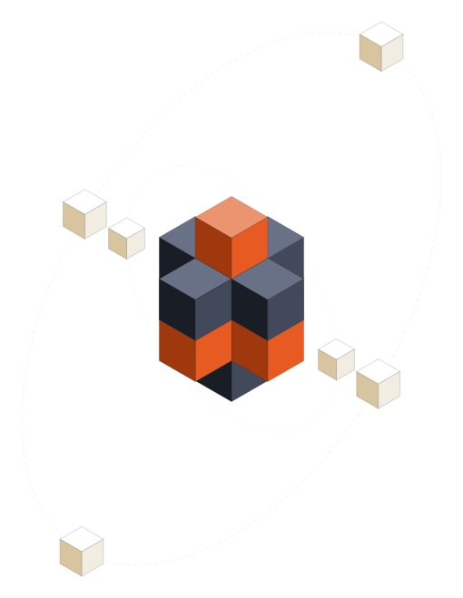

Carbox¶

Carbox is a JAX-accelerated astrochemical kinetic reaction network simulator built on JAX, Diffrax, and Equinox. Point it at a reaction network file (UCLCHEM, UMIST, or LATENT-TGAS format), and it parses the network, JIT-compiles it into a JAX-traceable ODE, and integrates species abundances over time under whichever physical conditions you choose -- a static cloud, a circumstellar outflow, or a custom model of your own.
This site covers the parts of Carbox that are easiest to get wrong by reading the source alone -- configuration, physics models, thermal balance, and output files -- and pulls the API reference straight from the code's docstrings, so it can't drift out of sync with the implementation. For the underlying chemistry (reaction types, network file formats), see the UCLCHEM documentation; Carbox reads the same network conventions.
Installation¶
pip install . # core library + `carbox-sim` CLI
pip install -e .[dev] # + pytest, pre-commit, ruff, for development
pip install -e .[docs] # + mkdocs, to build this site locally
See the repository README
for the full installation matrix (including the benchmarks extra) and CLI
usage; CONTRIBUTING.md
covers setting up a development environment.
Quickstart¶
from carbox import SimulationConfig, run_simulation
config = SimulationConfig(
number_density=1e4,
temperature=50.0,
t_end=1e6,
run_name="example_run",
)
results = run_simulation("data/network.csv", config, format_type="latent_tgas")
solution = results["solution"]
network = results["network"]
The same run from the command line:
carbox-sim --input data/network.csv --format latent_tgas
Where to go next¶
- Configuration -- the settings you're likely to change: physical conditions, initial abundances, solver tolerances, and what gets written to disk.
- Physics models -- how density, temperature, and extinction are prescribed (or, for thermal balance, integrated) over time; static clouds vs. CSE outflows vs. writing your own.
- Thermal balance -- letting radiative cooling feed back into an integrated gas temperature instead of holding it fixed.
- Output files -- what each output CSV/JSON contains and how to read it.
- API reference -- generated from docstrings via mkdocstrings; start at carbox.config or carbox.network.
Building these docs¶
.conda/bin/pip install -e .[docs]
.conda/bin/mkdocs serve # live preview at http://127.0.0.1:8000
.conda/bin/mkdocs build # static site in site/